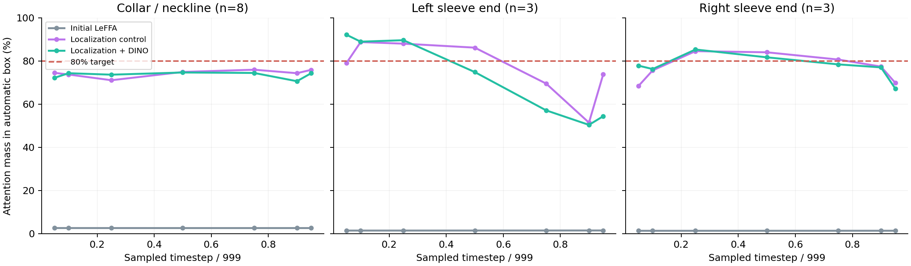

H200 · LEFFA · REAL VITON-HD PAIRS · 28 SEPTEMBER 2026
Local detail feedback from one training step.
The single-step gradient path is verified. The full quality target is still not met.LeFFA takes one sampled noisy target latent and garment condition. Learned semantic keys read component locations from live attention features. A frozen VAE decodes the single-step estimate; frozen DINO scores local crops and sends gradients back into LeFFA.
No live Molmo. No denoising trajectory before the loss.
What the follow-up measured
74.6% collar · 74.8% left sleeve · 81.7% right sleeve
Attention mass inside automatic annotation boxes at t=.5. The requested threshold was over 80% for each component.
Same-location DINO distance was 10.36% lower than the matched control: 0.23848 versus 0.26604. This comparison measures the image at the same annotated location, so moving the crop cannot produce that score improvement. The report also shows per-component results and a paired-image uncertainty interval.

Transfer to actual 20-step generation
In a separate post-training check on the same eight garments, fixed-region DINO distance was 0.22804 for the joint model versus 0.23798 for the control: 4.18% lower. The original model scored 0.24101.
Transfer is mixed: collar scores improved, but both sleeve-end averages worsened. The paired-image bootstrap interval includes zero; eight development images do not establish a reliable overall gain. Small feature-score changes are not labelled as visibly fixed details.
These are matched-seed full samples from random noise, with 20 DDPM steps, guidance 2.5 and no final RGB repaint. Their generation was never part of the training loss.
Inspect all full samples and detail cropsBoth experiments remain visible
Attention mass is at t=.5; fixed-site DINO averages all annotated regions at seven timesteps. Total: 4,000 optimization updates, zero reported OOMs. Both runs used actual model forwards, RGB decoding and DINO crops on every iteration.
The weakest collar cases are 02993_00 (18.6% mass; green V-neck) and 10337_00 (54.6%; white collar). These failures are included in the gallery.
Scope of the evidence
24 optimization images and 8 separate garment images, with 14 annotated validation regions. Labels are previously cached automatic MolmoPoint proposals; they are not human ground truth. No annotation box is passed into the localization logits. The crop size is supplied by metadata.
LeFFA has no native collar/cuff text-token attention: its text cross-attention is disabled. This adds a semantic readout to two live image-attention layers and trains their Q/K projections. The readout has 2,880 learned weights; the selected projections have 1,024,000.
The follow-up was chosen after observing the first result, so its eight images are a development cohort. The figures are single-step estimates from noised paired targets during training. The separate 20-step check measures full-sample feature scores on these same eight images; broad generalization and visible defect correction have not been established.
Implementation & evidence
Reproducible source, manifest and commands · Real DINO gradient verification · Checkpoint and update audit · Complete follow-up results